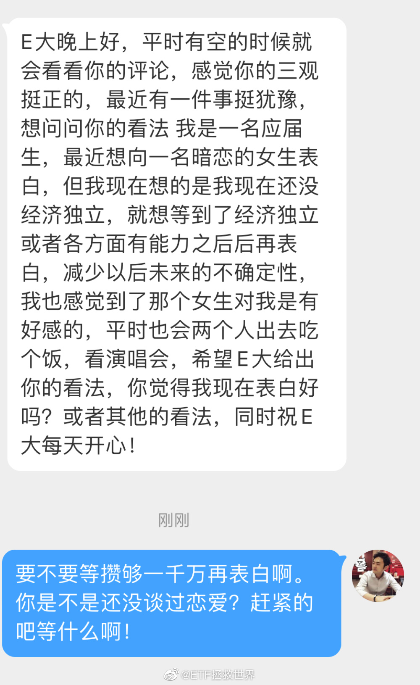
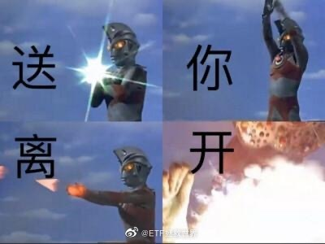

回复@苏格拉姐:如果女性对男性表白，男性顾左右而言他，比如“今天你喝多了明天酒醒再说”，那第二天女性也不要再次说了，真相是他真的不喜欢你……男性如果真的不喜欢一个女性，你是很难通过打动他而改变现实的……//@苏格拉姐:不是吧。。。那说明以前示好装傻的就是真的一点不感兴趣@ETF拯救世界:没谈过恋爱的人有一个问题就是把恋爱看得过于神圣。 
回复@欇欇生江上:这你就错了，只能说明你不懂男人。大多数男人是，只要女孩看他一眼，他就会觉得女孩喜欢他。跟他说句话，他就会开始想两个人的孩子叫什么名字了。//@欇欇生江上:我脚的吧，女孩子对你是不是也有好感，你自己心里是最清楚的@ETF拯救世界:没谈过恋爱的人有一个问题就是把恋爱看得过于神圣。
回复@来两个鸡蛋饼:如果还想保持目前的状态，就不要贸然表白，以免万一失败连朋友都没得做。要通过有技巧的试探弄清楚对方是否也有这个意思。如果一点都没有还是慎重。//@来两个鸡蛋饼:想问E大 在社会上已经几年了 然后喜欢一个女孩子 女孩子比我优秀 我可以和他表白吗@ETF拯救世界:没谈过恋爱的人有一个问题就是把恋爱看得过于神圣。
回复@红色枫叶0825:问题是很多人根本没跟环保没得卖，生买金融//@红色枫叶0825:回复@ETF拯救世界:今天卖环保也多赚2个多点，这样就没差多少了@ETF拯救世界:我看很多朋友评论说昨天没上车，今天大涨强行扒车。这个我真的无可奈何。你一定要比我成本高的买，以后又觉得收益率不够，这就让我很无奈。
回复@无力向微风:自动跟车不香吗。以前我和小助理们也经常发完车忘了跟，现在不会了//@无力向微风:我要气死了，昨天工作太忙都没看手机，三点零一分手机振动终于看到发车信息，当时我就不好了，有点心肌梗死的感jio，然后今天爬上了车。。。。@ETF拯救世界:高位追涨。我还有救吗
我发现很多朋友会觉得别人微博啊，或者别的地方把你拉黑是别人的错。这个我就不明白了。别人的微博是别人自己的，拉黑你有什么问题吗。你去人家做客人家不欢迎你把你请出去不正常吗。反正没有铁粉标志的人说话让我不舒服就会拉黑。我不觉得有什么问题，你也可以拉黑我啊，我保证不会生气甚至有点高兴。
南极电商，2020年3月前，股东人数一直不到2万，股价9块多。2020年7月见顶，股价24元，股东人数3.5万。目前股价回到9元。我估计股东人数在下跌过程中已经突破4万。这就是为什么大多数人在股市中会赔钱。
盈利后的卖出真的真的真的很难。这种难你不自己去操作一个品种，你是体会不到的。卖早了少吃很多，卖晚了坐电梯。不卖就从大幅盈利变成亏损最终退市。大幅下跌后不卖等反弹，反而等来的可能是继续暴跌。大幅下跌后卖出，反而可能会大幅反弹。而大幅上涨后卖出，又有可能迎来继续的暴涨，没有天空。目前我本人是有一套卖出的策略，但不能说完美。我也怀疑世界上有没有一种完美的卖出体系：每次卖在最高点，哪怕是每次卖在最高区域。这个问题我也一直在不断的探索，希望未来还能继续提升。我现在能做的只能是摁住自己的人性，相信自己的策略，每次坚决执行。在开发出更好的卖出策略前，除了相信它我别无选择。
回复@幸运的kds777:巴菲特12块清仓中石油，然后涨到21被骂成什么了。无论左侧右侧谁能卖在最高点？//@幸运的kds777:回复@遇见你温柔如初:他想鱼头吃到鱼尾，操作超过巴菲特@ETF拯救世界:150再出12%环保。S出33%。该买就买，该卖就卖，慌什么。
回复@我的小树袋熊出没啦啦啦啦:对于美股来说，过去十几年最高就是23，现在是28。//@我的小树袋熊出没啦啦啦啦:我不懂了，23倍市盈率很高吗？@新浪财经:【从科技股到#比特币# 华尔街嗅到了20年前互联网泡沫的气息】美股23倍远期市盈率高高在上，美银将比特币称为“所有泡沫之母”。全球资本市场新年的涨势在本周一开始便遭遇挫折，欧美股市盘中一度下跌超1%，风头正劲的数字货币出现集体大跳水，比特币日内最大跌幅近30%。包括美银、高盛在内的多家机构对近期由刺激政策推动的风险资产价格上涨表示担忧，短期内由投机带来的泡沫破裂风险值得警惕。从科技股到比特币，华尔街嗅到了20年前互联网泡沫的气息
回复@萱萱的小麦2018:从最高点回调了5%叫低点，盈利超过70%卖出叫低点。所以你的要求就是一定要卖在最高点。晒喷子。//@萱萱的小麦2018:环保高点不卖，低点卖，金融三傻低点不买，涨了再买，绝对神操作啊！@ETF拯救世界:150再出12%环保。S出33%。该买就买，该卖就卖，慌什么。